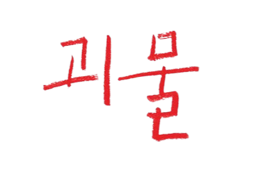

2023 | 2H 6M | 미스터리, 스릴러 | 일본
“우리 동네에는 괴물이 산다”
싱글맘 사오리는 아들 미나토의 행동에서 이상 기운을 감지한다.
용기를 내 찾아간 학교에서 상담을 진행한 날 이후 선생님과 학생들의
분위기가 심상치 않게 흐르기 시작하고.
“괴물은 누구인가?”
한편 사오리는 친구들로부터 따돌림을 당하고 있는 미나토의 친구 요리
의 존재를 알게 되고 자신이 아는 아들의 모습과 사람들이 아는 아들의
모습이 다르다는 사실을 어렴풋이 깨닫는데… 태풍이 몰아치던 어느 날,
아무도 몰랐던 진실이 드러난다.
감독 | 고라에다 히로카즈
출연진 | 안도 사쿠라(사오리), 쿠로카와 소야(미나토), 히이라기 히나타(요리)
좋아하는 코멘트
사람은 자신이 피해자라고 생각하는 것엔 매우 민감하지만, 가해자라고 깨닫는 것은 어렵다.
- 사카모토 유지 (각본가)'